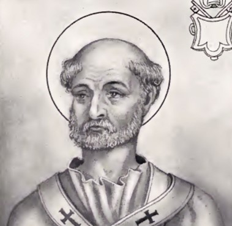

St. Soter
They have their feast together on 22 April, on which day they appear in most of the martyrologies, though Notker and a few others give Soter on the 21st and Caius on the 19th or 21st.
Soter was pope for eight years, c. 167 to 175 (Harnack prefers 166-174). We possess a fragment of an interesting letter addressed to him by St. Dionysius of Corinth, who writes: "From the beginning it has been your custom to do good to all the brethren in many ways, and to send alms to many churches in every city, refreshing the poverty of those who sent requests, or giving aid to the brethren in the mines, by the alms which you have had the habit of giving from old, Romans keeping up the traditional custom of the Romans; which your blessed Bishop Soter has not only preserved, but has even increased, by providing the abundance which he has sent to the saints, and by further consoling with blessed words with brethren who came to him, as a loving father his children." "Today, therefore, we have kept the holy Lord's day, on which we have read your letter, which we shall always have to read and be admonished, even as the former letter which was written to us by the ministry of Clement." (Eusebius, Church History IV.24) The letter which Soter had written in the name of his church is lost, though Harnack and others have attempted to identify it with the so-called "Second Epistle of Clement" (see CLEMENT OF ROME). The reverence for the pope's paternal letter is to be noticed. The traditional generosity of the Roman Church is again referred to by St. Dionysius of Alexandria to Pope Dionysius in the middle of the third century, and Eusebius says it still continued in his time. Nothing further is known of this pope.
Soter is said by the fifth-century writer known as PRÆDESTINATUS (c. xxvi) to have written a book against the Montanists; he adds that Tertullian wrote against Pope Soter and Apollonius. As we know (JEROME, Illustrious Men 40) that Tertullian wrote against Apollonius in his lost De Ecstasi, this may be true; see HARNACK, Gesch. der altchristlich. Lit., I, 589; ZAHN, Forschungen (1893), V, 49. On Caius in later Acts of Saints see TILLEMONT, IV; Acta SS., 14 April; BECILLUS, Acta S. Caii P. et M. (Rome, 1628). The false decretals attributed to these two popes will be found in the collections of councils, in COUSTANT, MIGNE, HINSCHIUS, etc. On a lette attributed to Caius by the Malabar Christians, see ROUTH, Reliq. Sacrae, II, 158, and HARNACK, op. cit., 777.
Chapman, J. (1908). Caius and Soter, Saints and Popes. In The Catholic Encyclopedia. New York: Robert Appleton Company. Retrieved April 26, 2010 from New Advent: http://www.newadvent.org/cathen/03144c.htm